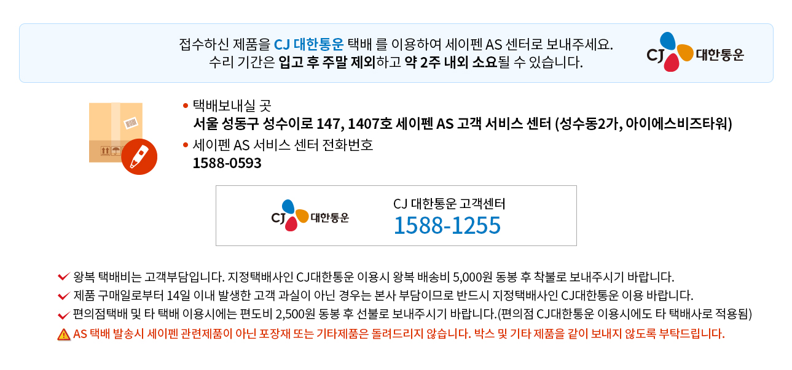

<?
	include '../header.html';
?>

<div class="topNav dp_f dp_c">
	<ul class="topMenu dp_f dp_c">
		<li><a class="dp_f dp_c" href="/" title="home"></a></li>
		<li><a href="" title="">> 서비스접수</a></li>
		<li><a href="" title="">> 온라인 AS 접수</a></li>
	</ul>
</div>
<div class="subWrap">
	<div class="c_center">
		<p class="asFinish_tit">AS 접수 <span class="red03 bold2">(2건)</span> 완료되었습니다.</p>
		<div class="asFin_imgWrap">
			
		</div>
		<div class="serviceBttm02">
			<div class="twoBtnWrap02 dp_f dp_cc dp_c">
				<a class="twoBtn dp_f dp_cc dp_c dark c_w" href="itemService_step3.html" title="AS 접수 목록 보기">AS 접수 목록 보기</a>	
				<a class="twoBtn dp_f dp_cc dp_c red01 c_w" href="/" title="홈으로 가기">홈으로 가기</a>	
			</div>
		</div>
	</div>
</div>

<?
	include '../footer.html';
?>